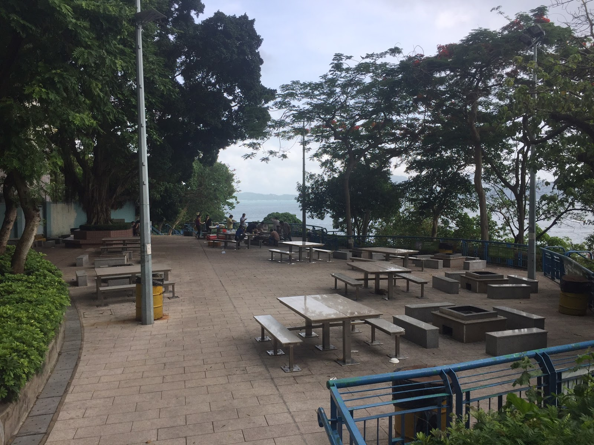

景點
探索周邊
點擊標記以發掘華富邨周邊的海灘、餐廳、活動及設施
圓形天橋
井字公屋
瀑布灣公園
雞蛋仔石灘

Hiking
瀑布灣公園
飽覽全景海岸線的觀景行山徑
- 設有不同難度的路線
- 壯麗山海景色
- 指示清晰的山徑
- 建議預留 1 至 2 小時
精彩活動
從舒展身心的活動到戶外探險，發掘享受華富邨的多種方式

舊香港味道
走入冰室，讓時間停留在最美好的年代。

燒烤
位於南區香港仔華富邨內的瀑布灣，設有一個位置便利的燒烤場地。
欣賞華富日落
黃昏時分是這裡最迷人的時刻，金色的夕陽灑落在井字型的舊建築與波光粼粼的海面上
實用資訊
前往方法
- 中環（交易廣場）：乘搭巴士 4, 4X 或 40 號
- 九龍區：乘搭巴士 970 或 970X 號
- 銅鑼灣：乘搭小巴 63 號
開放時間
- 公共區域：24 小時開放
- 瀑布灣公園：上午 7:00 至 晚上 11:00
- 商店及餐廳：一般為上午 7:00 至 晚上 9:00
設施
- 傳統舊式冰室（如：銀都冰室）
- 華富商場及街市
- 商場內設有洗手間
- 瀑布灣公園
參觀貼士
- 此為住宅區，請保持安靜
- 請勿擅闖住宅大樓內部
- 前往公園建議帶備防蚊液
- 請尊重居民及愛護環境，帶走垃圾